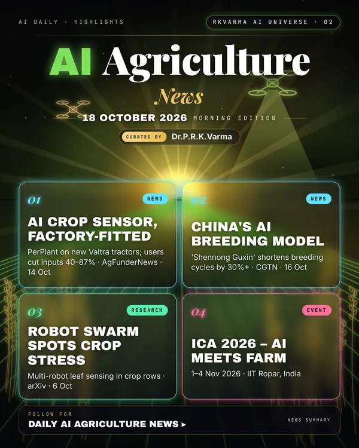

Latest updates · 18 October 2026
In the full issue →AI is now factory-fitted on new tractors: PerPlant's crop sensor ships on Valtra machines and users report cutting input use by 40–87%. AI breeding and soil sensing are also attracting money and results.
Top updates
- PerPlant AI sensor on Valtra tractors, AgFunderNews · 14 Oct 2026: PerPlant's AI crop sensor is now factory-fitted on new Valtra tractors from AGCO. It enables spot spraying and variable-rate inputs, and PerPlant says users have cut input use by 40–87%.
- OlsAro raises €5m seed, Tech Funding News · 14 Oct 2026: The funding will scale OlsAro's AI-driven genetics for climate-resilient crops.
- China's 'Shennong Guxin' breeding model, CGTN · 16 Oct 2026: In a World Food Day report, CGTN says the AI breeding model has shortened breeding cycles by more than 30%.
- Yara Growth Ventures backs Stenon, AgFunderNews · 12 Oct 2026: Yara's venture arm invests in Stenon, a soil-nitrogen sensing start-up whose AI turns in-field soil data into fertiliser recommendations.
Research
- AgroGround, arXiv · 3 Oct 2026: Multi-granularity grounded recognition for agriculture, i.e. locating and identifying crop features at several levels of detail.
- Swarm-coordinated multi-robot stress detection, arXiv · 6 Oct 2026: A team of coordinated robots detects early crop stress along rows using multimodal leaf sensing.
Upcoming events
- ICA 2026 – AI Meets Farm, 1–4 Nov 2026, IIT Ropar, India: A conference on digital agriculture and AI.
- Agri AI Summit 2026, 9–10 Nov 2026, Anaheim, California: A summit on AI in farming.
Why it matters
Spraying only where weeds grow and breeding faster means fewer chemicals, lower costs and more resilient food supplies.

